Job Nimbus · RepCard · Roofr
Three tools you'll use every day in the field. This page is your study reference — Neal walks through each one in class. Bookmark it on your phone.
Job Nimbus
The source of truth for every homeowner and every job. For most of the inspection flow, Job Nimbus is hands-off — but when you convert a retail-cert customer to an appointment, this is where you do it.
- Free Roof Inspection flow: You don't need to go to Job Nimbus. Everything is done automatically — the signed agreement, the inspection result (Damage / Retail / No Damage), the photos, the certificate PDF — all flow into Job Nimbus by themselves.
- Three situations where you DO go into Job Nimbus:
- The homeowner did the free inspection, came back as Retail, and now wants a real appointment.
- The homeowner declined the free inspection at the door but DID agree to an appointment. (They're not in Job Nimbus yet — you have to create them.)
- You're at the in-home sit and need to build them an estimate.
How Job Nimbus is organized (so the next part makes sense)
Everything in Job Nimbus flows through three layers:
Section 1: Create a contact
Use Section 1 when the homeowner is not in Job Nimbus yet — for example, they declined the free inspection at the door but DID agree to a real appointment. If they already exist (the free inspection auto-created them when they signed), skip ahead to Section 3 — you'll just search for them by address.
- Open Job Nimbus. You're on the home screen.
- Tap the + button in the top-right of the home screen.
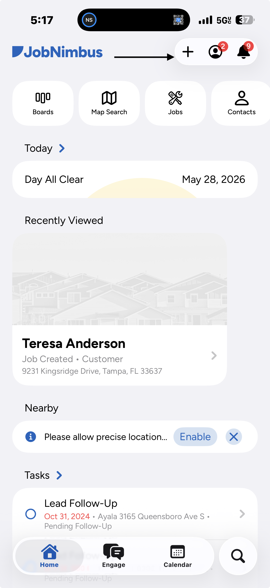
Home screen — tap the + in the top right - A dropdown appears with Task / Job / Contact / Photo / Form. Tap Contact.
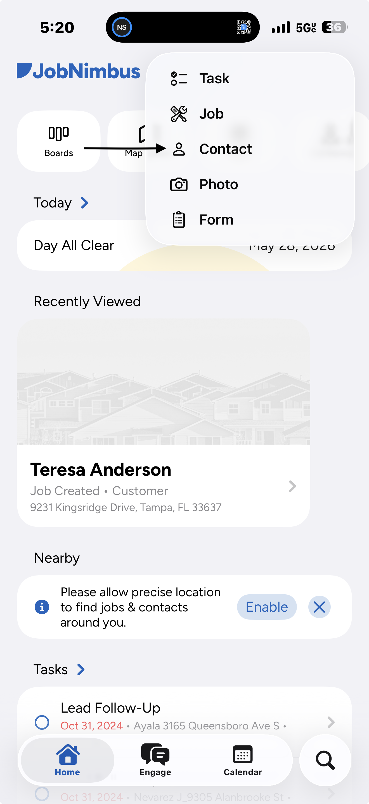
+ dropdown — tap Contact - Fill in the homeowner's name, address, phone. Save. You'll land on the new Contact's page — continue to Section 2 to create their Job.
Section 2: Create a job
A Contact alone isn't enough. Everything in Job Nimbus flows through the Job — photos, documents, status changes, appointments, estimates. After you've created the Contact (Section 1), you need to add a Job under that Contact.
- You're on the Contact's page (where Section 1 left you). Scroll to the JOBS section and tap + Create New.
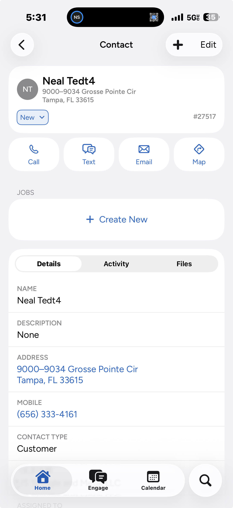
Contact page — tap Create New under JOBS - The New Job form opens. Most of it auto-fills from the Contact (name, address, rep, status). Don't change anything — just tap the ✓ checkmark in the top right to save.
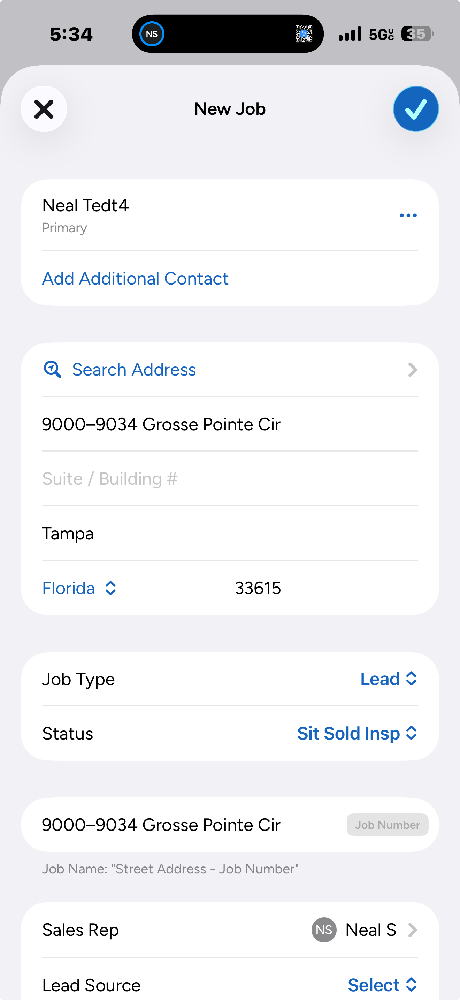
New Job — tap the ✓ checkmark to save - You're now on the new Job page. Confirm the top of the screen says Job (with a # number, e.g. #12017) — that's how you know you're inside the Job and not still on the Contact. Job page — header reads "Job"
Section 3: Create an appointment
An appointment in Job Nimbus is a Task inside a Job. So before you can create one, you need to be inside the right Job. There are two paths to get there:
- If they already exist in Job Nimbus (the free inspection auto-created their Contact + Job when they signed):
- Open Job Nimbus.
- In the search bar, type the address. The homeowner will populate.
- Click on them.
- Make sure you are in the JOB (not the contact). The job is the second level — if you're on the contact page, click into the job underneath. The top of the screen should read Job.
- If you just created them via Sections 1 + 2: you're already on the new Job page — go straight to the task-creation steps below.
Once you're inside the Job (either path), the steps to actually create the appointment are the same:
- On the Job page, tap the + in the top right (next to Edit).
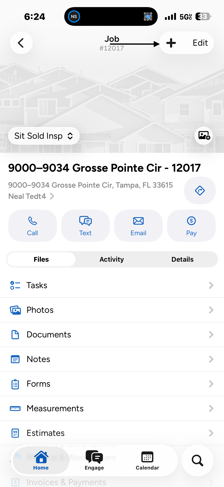
Job page — tap the + in the top right - A dropdown appears with Photo / Task / Job / Contact / Note / Files. Tap Task. + dropdown on the Job — tap Task
- On the New Task screen, tap the Task Type dropdown and select Appointment.
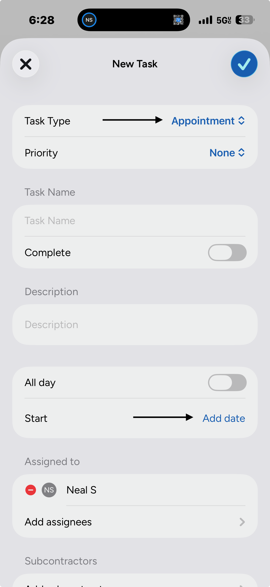
New Task — Task Type = Appointment, then tap Start - Tap Add date next to Start. Pick the date and time on the scroll wheel.
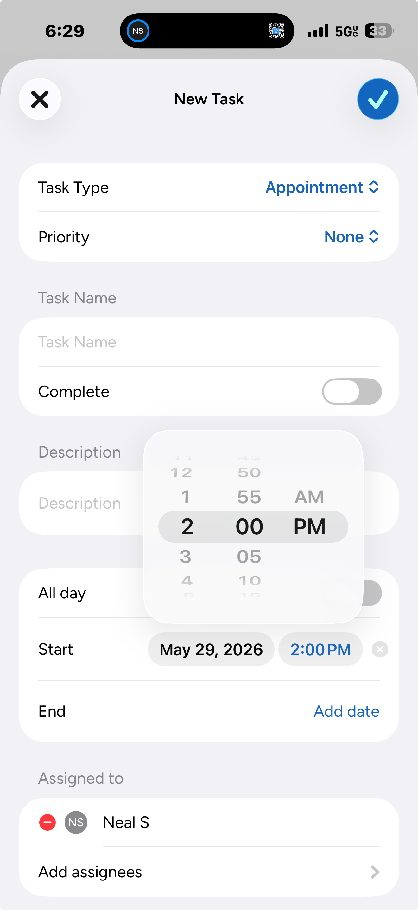
Date + time picker - Do NOT toggle "All day" on. All-day appointments lose the specific time — keep it off so the appointment is locked to the exact hour.
- Tap the ✓ checkmark in the top right to save. Appointment created.
Section 4: Create an estimate
You're at the homeowner's house. You ran the presentation. They want pricing. Job Nimbus has the entire estimate engine built in — product templates, line items, prices — you just plug in their squares.
- On the Job page, tap the + in the top right (same + you used to create the Task).
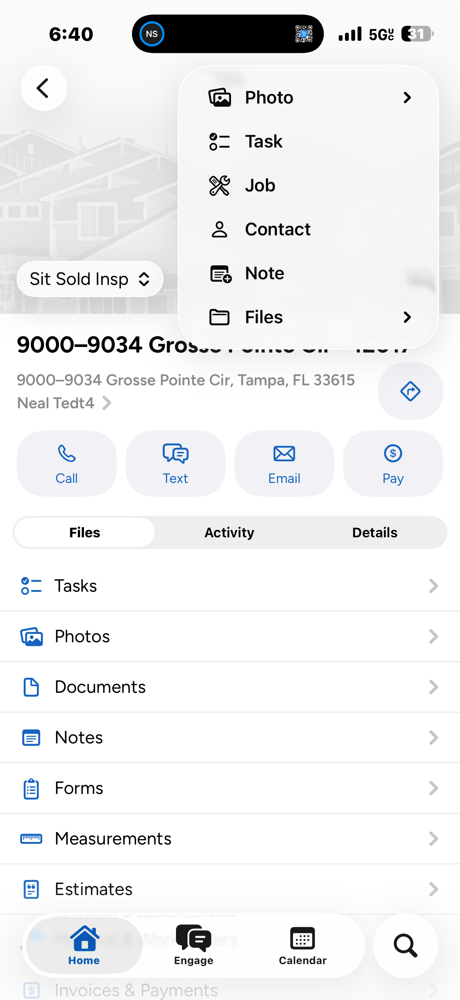
Job + dropdown — tap Files - Tap Files. The Files row expands into a sub-menu: Document / Form / Estimate / Material Order / Work Order / Invoice / Budget. Tap Estimate.
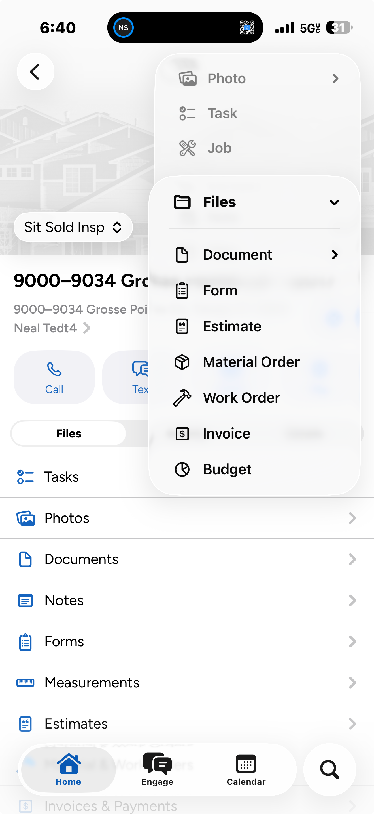
Files sub-menu — tap Estimate - The Estimate Pages screen opens. At the top is a Layout dropdown — tap it and pick the product the homeowner wants (Exposed Fastener Metal, Standing Seam, Permalock, Shingle, etc.). Every product works the same way; just different descriptions and prices.
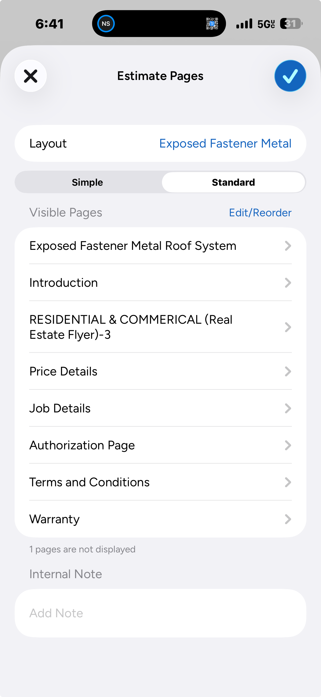
Estimate Pages — pick the product in Layout - Scroll to Price Details in the page list and open it. You'll see the product's Options section (e.g. "Exposed Fastener · $0.00 · 11 items"). Tap that card.
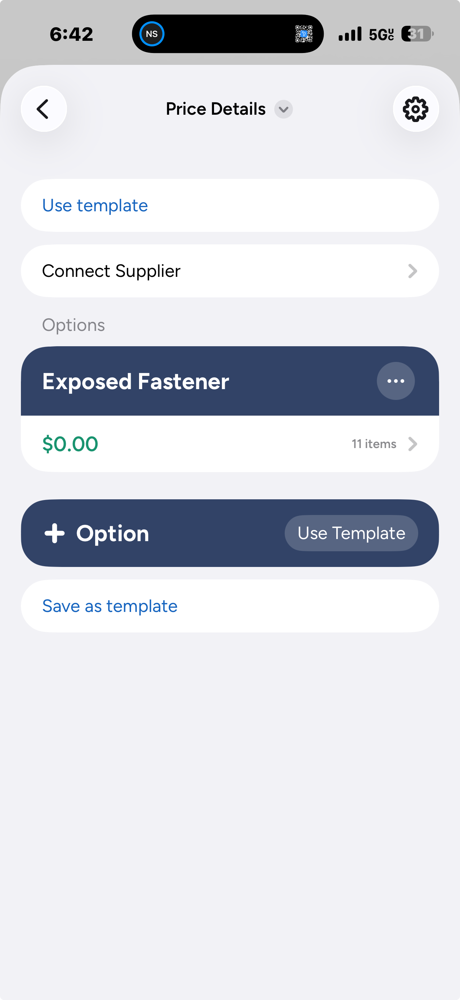
Price Details — tap the product card - Each line item shows you the scope of work + a price field. The first item (e.g. Exposed Fastener Metal Roof System) is the bulk of the roof — all the standard work bundled into one description.
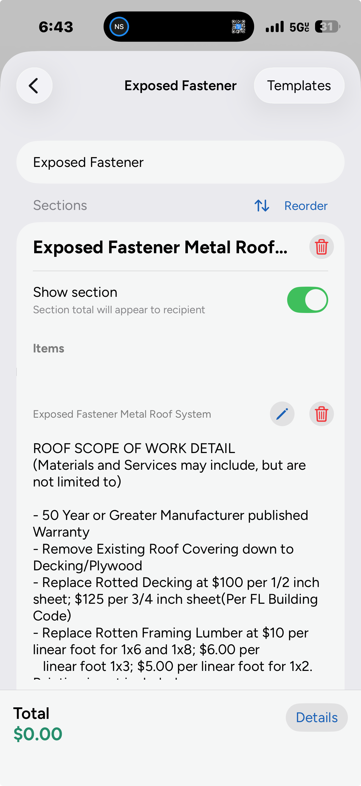
Item detail — scope of work description - Scroll down to the Price field. Above it is Quantity — that's where you enter the number of squares. Once Quantity is filled in, the line Total calculates automatically (Quantity × Price).
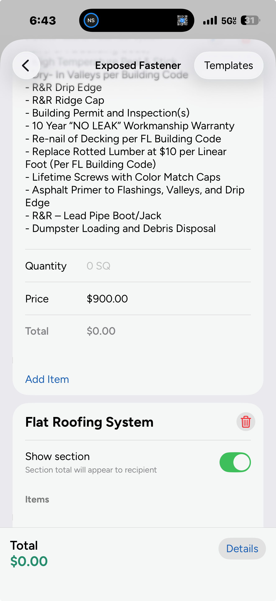
Quantity × Price = Total - Tap Add Item to bring in additional line items as needed for this house — Radiant Barrier, Insulation, 2nd Floor Charge, and any other add-ons the template has. Each one has its own Quantity + Price.
- Once you're done with products, tap Back. You'll land on the Estimate Pages screen again. Now tap Job Details. Back out of Price Details → tap Job Details
Section 4 (cont.): The Job Details page — finalize the estimate
After Price Details, the Job Details page is where you lock in the specifics of THIS house and THIS deal. Every field below has to be filled in — the office uses this page to schedule the install and to know what was promised.
- Color — Exposed Fastener Metal color. Enter the color the homeowner picked. Don't leave this blank; the office orders material off this field.
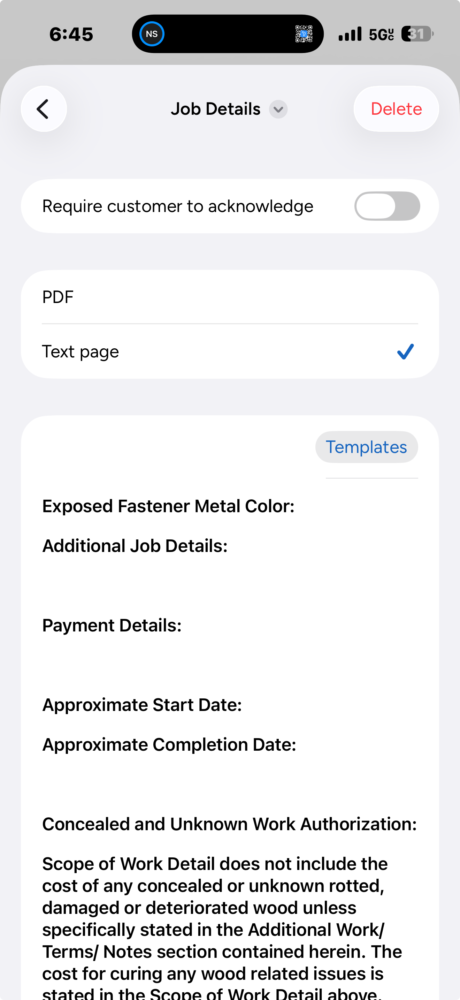
Job Details — every field on this page matters - Additional Job Details — anything you and the homeowner discussed that's important to them. Example: "On the right side of the house there are bushes — we need to protect them." If they mentioned a play set, a satellite dish they want re-mounted, a flag pole, a pet door, a specific gate to use — it goes here. When you're done, end this field with: "No other promises made." That line protects you and the install crew from a homeowner adding extras later that were never agreed to.
- Payment Details — write how they're paying. Cash, or finance through Upgrade, or whichever finance company you used. It must be notated here. Whatever finance company you chose must be written in this field — the office reconciles funding off this.
- Start Date — put 30 days from the date of sale. Not "ASAP," not blank — exactly 30 days out.
- End Date — 4 days after the start date. (So if sale is on the 1st: Start = the 31st, End = the 4th of the following month.)
- Explain to the homeowner: "We have to put a date in the system, but the office will contact you to let you know exactly when the crew is showing up to install." The dates on this page are placeholders — they exist so the system has something to schedule against; the office locks in the real install date when material is ready.
- When all the Job Details fields are filled in, tap Back. You'll land on the Estimate Pages screen — you'll see all the sections listed: Exposed Fastener Metal Roof System, Introduction, Residential & Commercial flyer, Price Details, Job Details, Authorization Page, Terms and Conditions, Warranty.
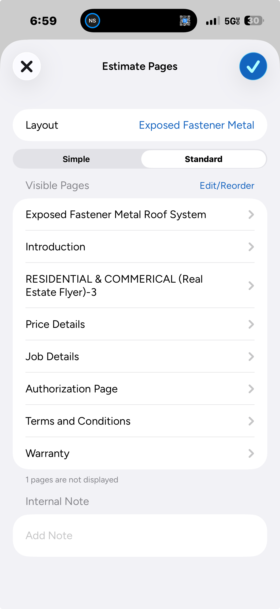
Back on Estimate Pages — tap the ✓ in the top right to finalize - Tap the ✓ checkmark in the top right. That saves and finalizes the whole estimate: products priced, color picked, all promises documented, payment method recorded, dates entered. Job Nimbus totals everything across every section (Exposed Fastener + Flat Roofing + add-ons) and the homeowner sees a clean breakdown.
- You'll land on the Estimate summary screen. At the top you'll see the total (e.g. $27,000.00), the estimate number (e.g. #12145), the status (Draft), the date, and the Sales Rep. Two buttons: Mark as Signed and Review & Share. Tap Review & Share.
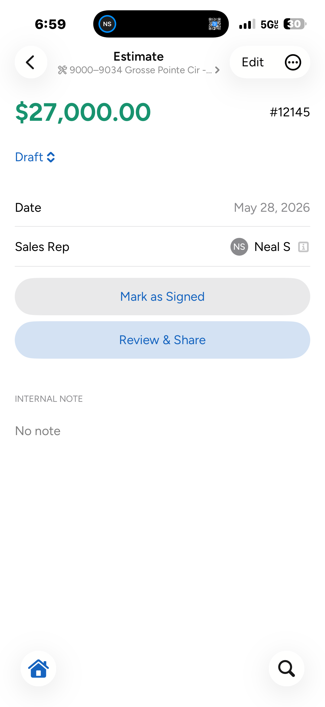
Estimate summary — tap Review & Share - The Review & Share screen opens — this is the actual finished estimate the homeowner will see. U.S. Shingle logo at the top, the cover photo of the metal roof, the product title (Exposed Fastener Metal Roof System), the date, your name and contact info on the right, then the Introduction page begins underneath. Scroll through and make sure everything looks right. At the bottom of the screen are two buttons: Sign Now and Send for Signing. Tap Sign Now.
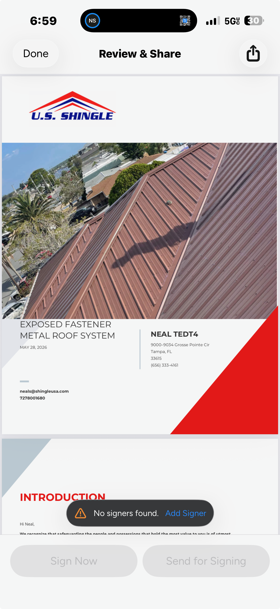
Review & Share — tap Sign Now
Section 5: Fill out the fields from a sale
Once you've made a sale, the Job in Job Nimbus needs to reflect what was sold — status, scope, key details. You don't edit the estimate; you edit the Job. From the Job page, the Edit button in the top right opens every field on the job for editing.
- Open the Job (the one with the address you just sold — top of the screen will say Job and show the job number, e.g. #12017). Tap Edit in the top right. Job page — tap Edit in the top right
- You'll know you're on the right screen because the header at the top says Edit Job (with an X to cancel, a red trash can to delete, and the ✓ checkmark on the right to save). The first fields you see are Job Type (e.g. Lead) and Status (e.g. Sit Sold Insp), then the job name, primary contact, and the address block. Scroll down — the fields we need are further down the page.
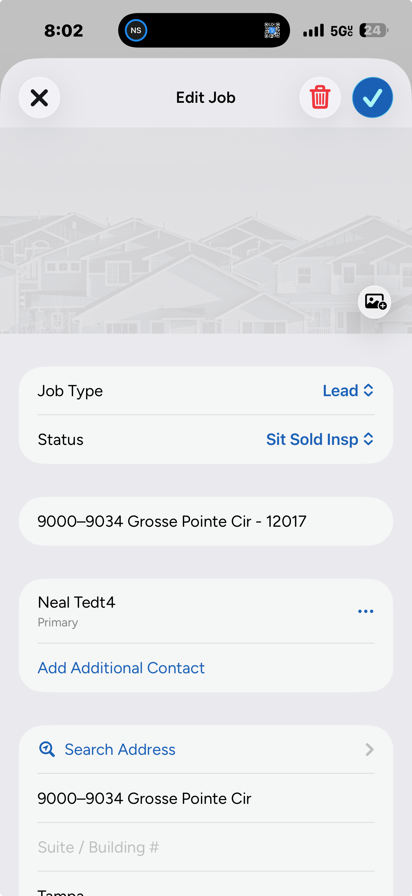
Edit Job — confirm the header, then scroll down - Past the Description field you'll hit the block of job-detail fields. This is the crucial section — the office uses these to schedule, order material, and bill correctly. Don't skip any. Fill in each one in order:
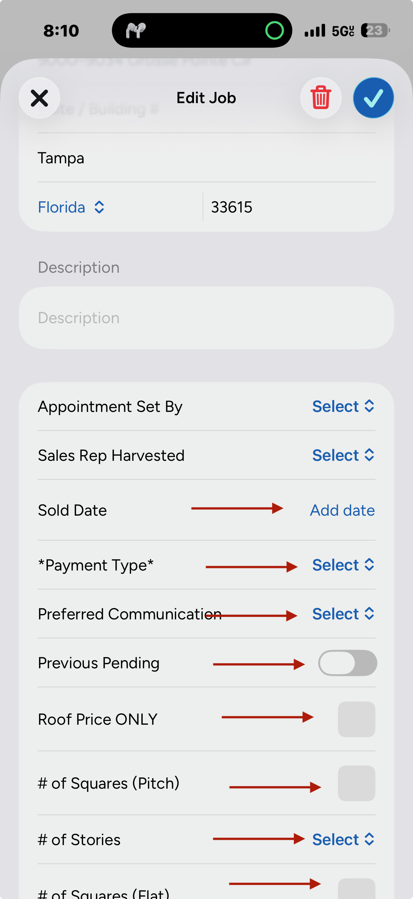
Edit Job — the field block the office relies on- Sold Date — tap Add date and fill in the date you closed the sale.
- Payment Type — tap Select and you'll get a list of options (Cash, Upgrade, and the other finance companies we use). Pick the one the homeowner is paying with.
- Preferred Communication — tap Select. I usually always put Text — unless the homeowner specifically said they don't want text.
- Previous Pending (toggle) — ONLY turn this on if the deal didn't close the first time you sat. Meaning: you ran the original presentation, couldn't overcome "let me think about it," and had to come back a second time to close it. If you closed on the first sit, leave it off.
- Roof Price ONLY — the price of the roof by itself, not the full deal. Example: total sale is $42,000, but $10,000 of that is Radiant Barrier / Insulation / other add-ons — then $32,000 goes here. The office uses this field to separate roof revenue from add-on revenue.
- # of Squares (Pitch) — the number of squares on the pitched section of the roof. Pitched and flat are tracked separately because they're different materials and different crews.
- # of Stories — tap Select. 1 story, 2 story, etc. Picks the access/safety setup the crew needs to bring.
- # of Squares (Flat) — the number of squares on the flat section of the roof (if any). Zero if it's all pitched.
- Keep scrolling. Two more property-condition toggles, then the product block:
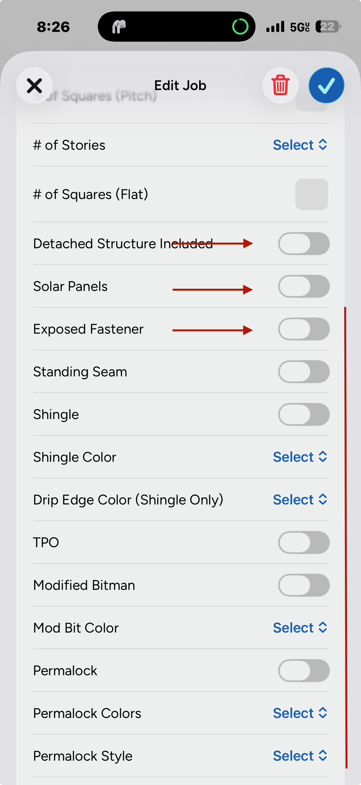
Edit Job — property toggles + product block- Detached Structure Included — is there a garage that isn't attached to the house, or a shed, that we're also doing? If yes, flip this on. If it's just the main house, leave it off.
- Solar Panels — are there solar panels on the roof that have to be removed and reattached as part of the job? If yes, flip this on. The office needs to know to schedule the solar contractor.
- The product block — "What did you sell?" The rest of this section is the product list. Flip on the toggle(s) for whatever the homeowner bought:
- Exposed Fastener
- Standing Seam
- Shingle — if Shingle is on, also pick Shingle Color and Drip Edge Color (Shingle Only) from the selects below it.
- TPO
- Modified Bitman — if on, also pick Mod Bit Color.
- Permalock — if on, also pick Permalock Colors and Permalock Style.
- Keep scrolling. Past Tile / Stone Coated Metal / Tarp you hit the add-on block — IRBADS, Radiant Barrier, Insulation. Read the units carefully — they're different from the roofing fields above.
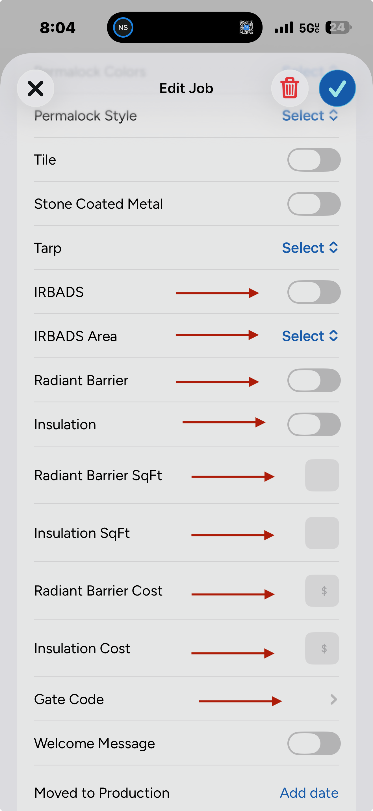
Edit Job — IRBADS, Radiant Barrier, Insulation block- IRBADS (Insulation, Radiant Barrier, Attic Duct Sealant) — did you sell IRBADS? If yes, flip this on.
- IRBADS Area — tap Select. A dropdown appears with the area options. Some homeowners don't want their garage done — that's what this field is for. Pick the area that matches what was sold (whole house, house only without garage, etc.).
- Radiant Barrier — toggle on if sold.
- Insulation — toggle on if sold.
- Radiant Barrier SqFt — square FOOTAGE, not squares. Roofing is measured in squares (1 square = 100 sq ft), but Radiant Barrier and Insulation are calculated in square feet. Put the actual square footage in.
- Insulation SqFt — same unit — square feet, not squares.
- Radiant Barrier Cost — TOTAL charge for the radiant barrier on this job. NOT the dollar-per-square-foot rate. We do NOT want to see "2.50" in this field — we want to see the total dollar amount (e.g. 2,500).
- Insulation Cost — same rule — total charge, not per-sqft.
- Gate Code — if the property is in a gated community, put the gate code here so the install crew can get in. Leave blank if there's no gate.
- Skip the permitting block entirely. Keep scrolling past Welcome Message and Moved to Production and you'll hit a long stretch of fields: Reviewed & Confirmed, Municipality / Jurisdiction, HVHZ, Permit, Permit Number, Permit Pulled Date, Permit Expiration Date, Permit Packet Created, Private Provider, Permit - In Progress, In Progress Inspection, Permit - Final, NOC Recorded, NOC Recorded Date. None of these are yours to fill in. The office handles every one of them as they pull permits and pass inspections. Just scroll past.
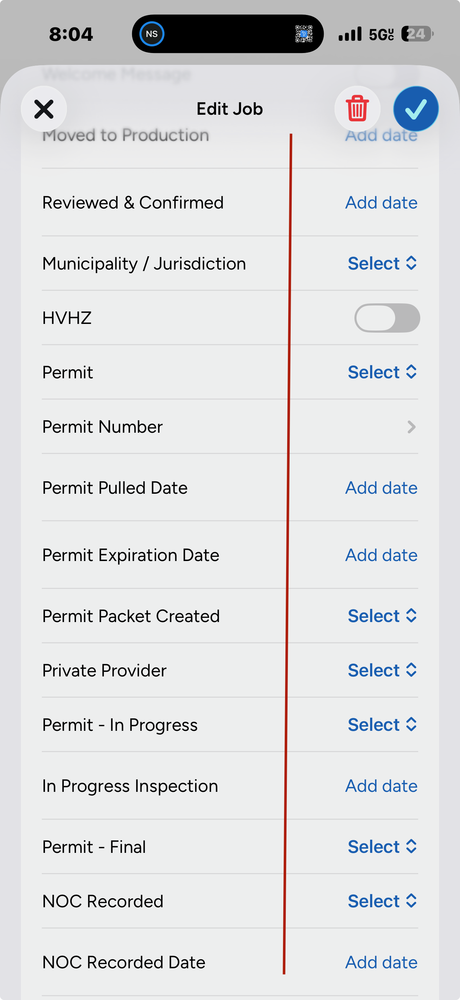
The permitting block — office territory, scroll past - The measurement / production block — only ONE field is yours. Keep scrolling and you'll hit another big stretch: Measurements Needed?, Measure Rep, CAD - Drawing Sent, Cad Drawing Rcvd, Material Supplier, Warehouse Material, All Material Ordered, Material Delivery Date, Jobsite Foreman, Wood Sheet Uploaded, Roof Install, Roof Complete, IRBADS Install, IRBADS Completed. Of all of those, only Measurements Needed? is yours:
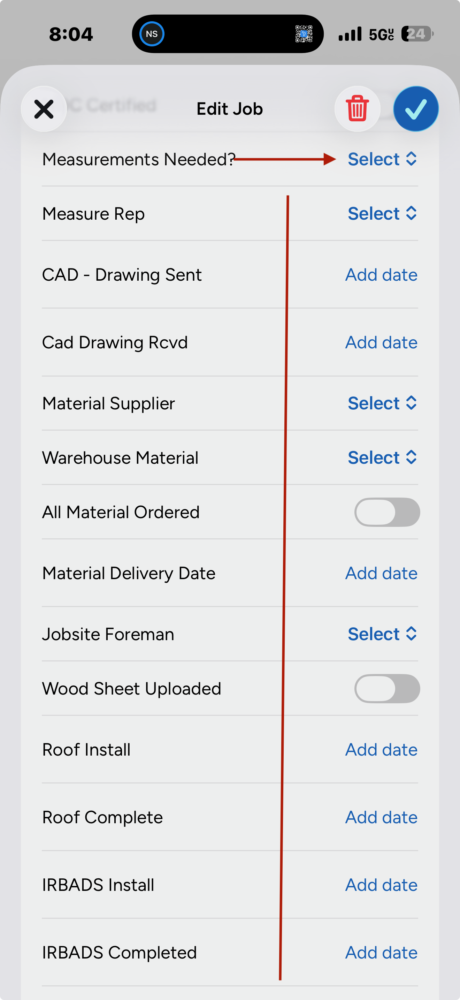
Measurements Needed? — the only field you touch in this whole section- Measurements Needed? — tap Select. For any metal roof, the answer is yes / needed. Metal roofs require U.S. Shingle to go out and hand measure the roof — Roofr measurements aren't accurate enough for metal. Not you — someone from production goes out to take the hand measure. You just flag it here so production knows to schedule the trip.
- Everything below it (Measure Rep through IRBADS Completed) — production / warehouse / install fills those in as the job moves through their process. Leave them blank.
- The final tail block — you do NOTHING here. Past IRBADS Completed there's one last stretch of fields: NEEDS REPAIR, Left Over Material, Progress, Google Review, Warranty Filed, Cancelled, Inspection, Inspected Date, PA - Filed, INS- Approved, DO NOT TOUCH, Hannah, Advanced, Last Touched. You touch nothing in this section. Every one of these is office / admin / warranty territory — including the field literally named "DO NOT TOUCH."
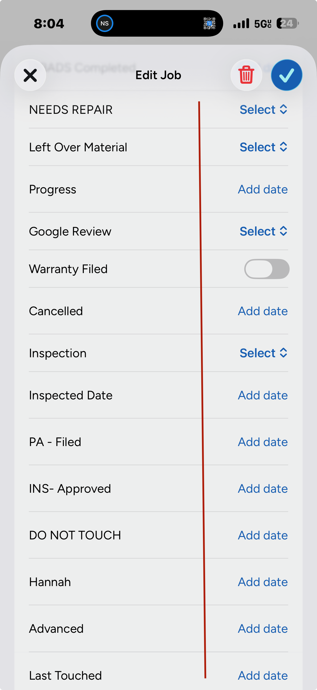
The final tail block — leave it all alone - The last block — two fields are yours: product color and Credit Repair. Past Last Touched you'll hit the final stretch: Exposed Fastener Color, Standing Seam Color, ISS Uploaded, Correction Needed, Install Paperwork, NOC - Uploaded to Municipality, Crew Email Draft Created, Permit Assignee, NOC Form, NOC Submitted, Affidavit Uploaded Date, Affidavit Uploaded, Move Back to Retail, Credit Repair. Only two of these are yours:
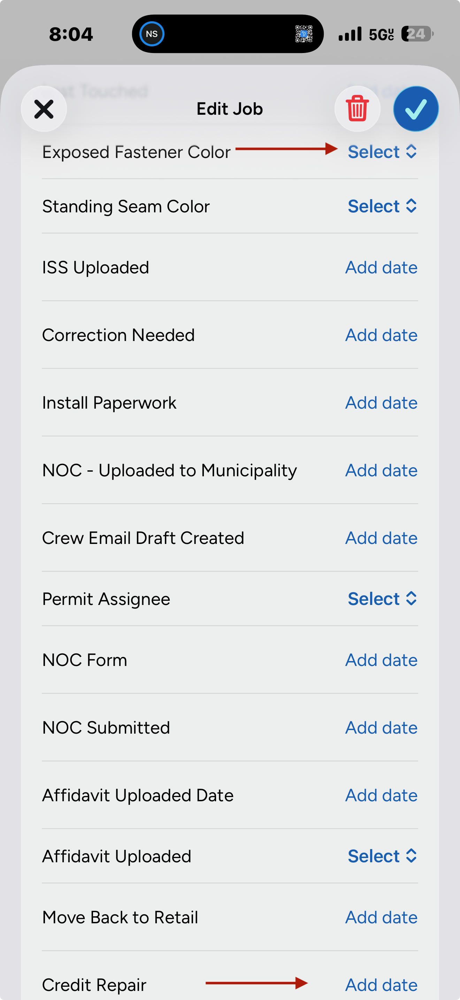
Two arrows: Exposed Fastener Color at the top, Credit Repair at the bottom- Exposed Fastener Color — tap Select and pick the color. If you sold Exposed Fastener, this is where you log which color was chosen. (Same idea for Standing Seam Color right below it — fill it in only if you sold Standing Seam.)
- Credit Repair — tap Add date. Use this when a homeowner gets denied financing. If they don't qualify, we enroll them in a credit-repair service to help bring their credit back up so they can finance the roof down the road. U.S. Shingle & Metal pays for the service — it's a no-cost-to-the-homeowner offering we use to keep the deal alive.
- Everything between the two arrows (ISS Uploaded through Move Back to Retail) — office / production. Leave blank.
- Tap the ✓ checkmark in the top right to save. Once everything you're responsible for is filled in (Sold Date, Payment Type, Preferred Communication, Roof Price ONLY, Pitch + Flat squares, # of Stories, Detached Structure / Solar Panels / Product toggle + color, IRBADS block if sold, Gate Code if applicable, Measurements Needed?, Credit Repair if denied), tap the ✓ in the top right to save the Job. And now your sale is complete in Job Nimbus.
- SqFt ≠ Squares. Roof = squares. Radiant Barrier + Insulation = square FEET. Confusing the two will under- or over-bill the customer by 100×.
- Cost = total dollars, not per-sqft. If the rate was $2.50/sqft on 1,000 sqft, the cost field gets $2,500, NOT $2.50.
- Working on the Contact instead of the Job. If you set a task on the Contact, it doesn't tie to the work. The top of the screen must say Job before you tap Tasks.
- Creating a new contact when the homeowner is already in Job Nimbus. If they did the free inspection, they exist already — search by address first. Only use the + → Contact path for homeowners who DIDN'T do the inspection.
- Touching Job Nimbus during the Free Roof Inspection flow. You don't need to. Signing, result, photos, cert — all automatic. Manual touching creates duplicates that the office has to clean up.
Getting set up
- IT provisions your @shingleusa.com email + Job Nimbus login. Check your work email for the invite.
- Install the Job Nimbus mobile app — iOS or Android. Sign in.
- Run through the appointment walkthrough above with Neal on a real (or test) retail-cert customer.
Other things Job Nimbus does (for reference)
You'll touch most of these later, not on Day 1. They're here so you know what Job Nimbus's full surface looks like.
RepCard
Your map of where to knock. The office uploads the lead data; you open the app, filter the map down to NEED pins, and go work them.
- We upload the data. You don't capture leads with NFC cards or run follow-up drips — the homeowners on your map are pre-loaded by the office. Your job is to work them.
- Two things you actually need to learn: (1) how to filter the map down to your NEED pins, and (2) when to change a pin's status (spoiler: only after talking to the homeowner).
Workflow 1: Get to your map of NEED pins
When you open RepCard you land on the home page (stats, tutorials, etc.). Getting to the actual map is a few taps.
- Open RepCard. You're on the home page.
- On the right-side floating buttons, tap the fan-fold map icon. This takes you to the map.
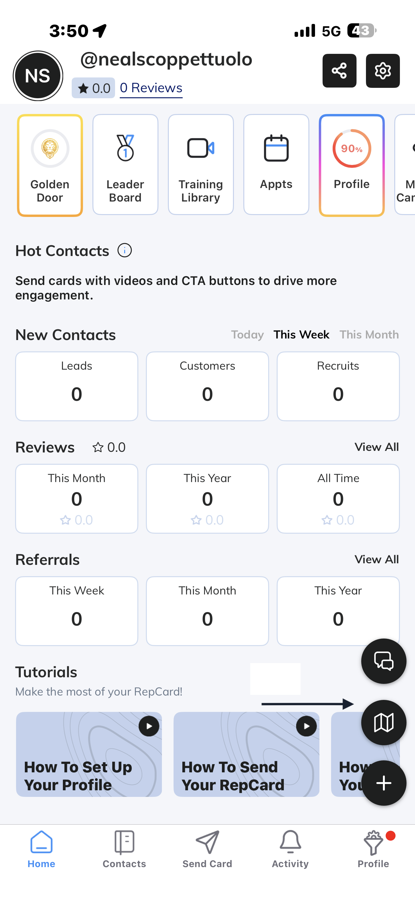
Home page — tap the fan-fold map icon - On the map, tap the blue filter (funnel) icon on the right-side toolbar. A "Filter by" drawer slides up.
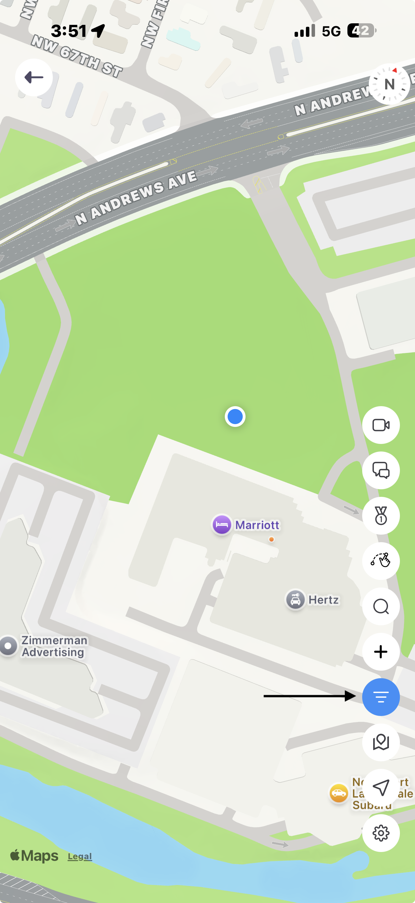
Map view — tap the blue filter (funnel) icon - In that drawer, tap Select Status.
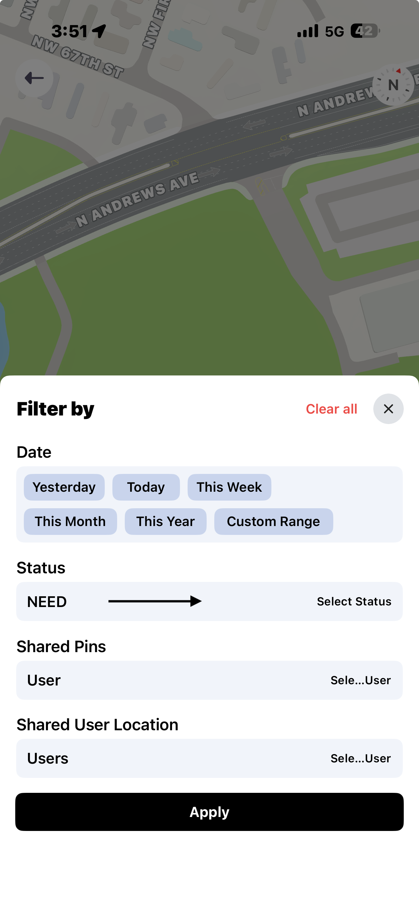
Filter by drawer — tap Select Status - On the Select Status screen, check only NEED — nothing else. Then go back / save.
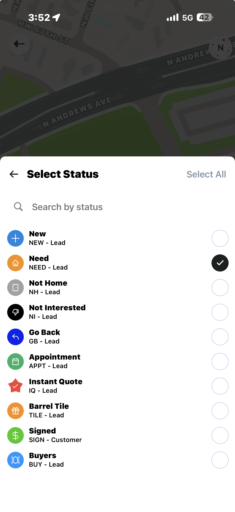
Select Status — check ONLY Need - Tap Apply on the filter drawer.
- The map redraws showing only the NEED pins. These are your homes to knock today.
Workflow 2: Working a pin
Tap any pin on the map — a drawer slides up showing the homeowner's name, address, and your distance to them.
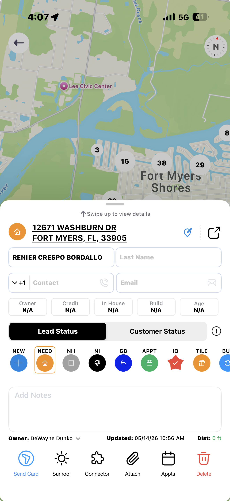
Tapped pin — homeowner info + Lead Status rowWhen you do talk to them, there are two outcomes that matter for the pin:
Everything else leaves the pin as NEED — no answer at the door, busy/come-back-later, dog in the yard, wrong house. The pin stays NEED so someone (you, or another rep) can try again.
- Knocking without filtering first. The map shows hundreds of pins until you filter. Always do the Filter → Select Status → NEED flow before you leave the truck.
- Changing the pin status when you didn't actually talk to the homeowner. No-answer is NOT NI, NOT NH — it's still NEED. Only the two outcomes above (APPT, NI) move the pin.
- Filtering by anything besides NEED. Other statuses exist (NH, GB, IQ, TILE, etc.) — ignore them on the filter screen. NEED is the only one you knock.
Getting set up
- Manager sends you a RepCard invite + adds you to the team account.
- Install the RepCard mobile app. Sign in.
- Verify you can see your assigned territory on the map (NEED pins should be visible after filtering).
- Walk through the home page → map → filter → NEED → Apply flow with Neal before your first day in the field.
Roofr
Order an accurate roof measurement in 2 hours for $13. Build a professional proposal in minutes. Close on the spot.
What it is
An aerial roof measurement service + proposal builder + invoicing tool, designed for roofing reps. You stop guessing squares from the ground and the homeowner sees a polished proposal that's tied to real measurements.
Daily-use features
- Ordering the measurement only AFTER the homeowner asks for the quote — order it BEFORE the sit so you walk in with it ready
- Submitting a wrong address for measurement — the report comes back for someone else's roof and you wasted $13. Verify by satellite first
- Editing the pricing on the fly to "win" the deal. Talk to Neal first — we have a low-bid match guarantee, you don't have to discount
- Forgetting to save the proposal PDF back to Job Nimbus's Documents tab — keep everything for that homeowner in one place
Getting set up
- Manager sends you a Roofr invite + adds you to the team account.
- Install the Roofr mobile app (or use the web app — both work).
- Sign in. Verify you can see the team's pricing templates.
- Order a practice measurement on your own address — see the workflow end-to-end before you do it for a real homeowner.
How they work together
A normal day in the field touches all three tools. Here's the typical chain:
1. Knock the door
Hand over (or tap) your RepCard. Homeowner's info captured automatically; they get your card on their phone.
2. Book the sit
Disposition the lead in RepCard. Sit booked → syncs to Job Nimbus as a new contact + scheduled appointment.
3. Pre-sit measurement
Before the in-home sit, order a Roofr measurement on the address. Report back in 2 hours.
4. Build the proposal
Use the measurement + team pricing template to build a proposal. Print or load it on the iPad for the sit.
5. Run the in-home
Take before-photos with Job Nimbus's camera. Present the proposal. If signed, Job Nimbus marks the job sold.
6. Handoff to install
Job sits in Job Nimbus under the right status. Office schedules the install. Photos + signed docs + measurement all live on the job for the crew.